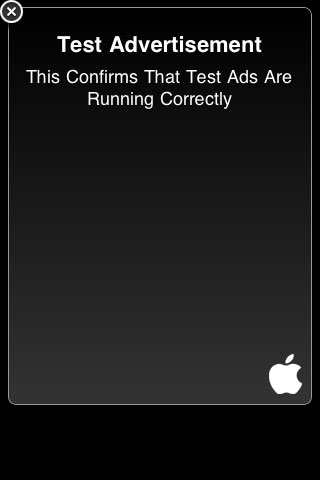

UDN
Search public documentation:
InGameAdsJP
English Translation
中国翻译
한국어
Interested in the Unreal Engine?
Visit the Unreal Technology site.
Looking for jobs and company info?
Check out the Epic games site.
Questions about support via UDN?
Contact the UDN Staff
中国翻译
한국어
Interested in the Unreal Engine?
Visit the Unreal Technology site.
Looking for jobs and company info?
Check out the Epic games site.
Questions about support via UDN?
Contact the UDN Staff
iOS におけるインゲームの広告
概要
Ad Manager (広告マネージャ)
InGameAdManager という特別なクラスです。このクラスは、インゲームの広告の入手、表示、インタラクションに関係するあらゆる機能を担います。
プロパティ
- bShouldPauseWhileAdOpen - TRUE の場合は、ユーザーが広告をクリックするとゲームが休止し、画面全体が広告になります。
- ClickedBannerDelegates - ユーザーが広告をクリックしたときに実行される
OnUserClickedBannerデリゲートの配列です。 - ClosedAdDelegates - ユーザーが開いている広告を閉じたときに実行される
OnUserClosedAdvertisementデリゲートの配列です。
- Init - エンジンによって呼び出されるイベントで、広告システムの初期化を処理します。
- ShowBanner [bShowBottomOfScreen] - インゲームの広告をバナー内に表示します。
- bShowBottomOfScreen - TRUE の場合は、スクリーン最下部に沿ってバナーが表示されます。TRUE でない場合は、スクリーン最上部に沿ってバナーが表示されます。
- HideBanner - 表示されているあらゆるインゲームの広告を非表示にします。この時点で広告が開いている場合 (すなわち、ユーザーが広告とインタラクトしている場合) は、広告が強制的に閉じられます。(ForceCloseAd 参照)。
- ForceCloseAd - 開いている (クリックされた) 広告を強制的に閉じて、バナーの状態に復帰させます。これによって収入はロスします。したがって不必要に実行すべきではありません。
- SetPauseWhileAdOpen [bShouldPause] - 広告がクリックされたときにゲームを休止させるべきか否かをセットします。
- bShouldPause - TRUE の場合は、広告がクリックされたときにゲームが休止します。それ以外は、ゲームが稼働し続けます。
- OnUserClickedBanner - ユーザーがバナー広告をクリックしたときに呼び出されるデリゲートです。ベースクラスがすでに休止を処理しているため、特別な処理を行わなければならない場合にのみデリゲートが必要となります。これを PlayerController の関数や他のアクタの関数にセットする場合は、レベルを切り替える際に元に戻るようにしなければなりません。
- AddClickedBannerDelegate [InDelegate] - 新たなデリゲートを
ClickedBannerDelegates配列に追加します。 - ClearClickedBannerDelegate [InDelegate] -
ClickedBannerDelegates配列からデリゲートを削除します。 - OnUserClosedAdvertisement - ユーザーが広告を閉じたとき (バナー広告をクリックしたあとで)、呼び出されるデリゲートです。 ベースクラスがすでに休止解除の処理を行っているため、特別な処理を行わなければならない場合にのみデリゲートが必要となります。 これを PlayerController の関数や他のアクタの関数にセットする場合は、レベルを切り替える際に元に戻るようにしてください。
- AddClosedAdDelegate [InDelegate] -
ClosedAdDelegates配列にデリゲートを追加します。 - ClearClosedAdDelegate [InDelegate] -
ClosedAdDelegates配列からデリゲートを除去します。
実装
PlayerController の PostBeginPlay() 関数の中で、関係するデリゲートを割り当て、バナーを表示することができます。この場合は、もちろん、ゲームやレベルが開始した時からバナーを表示したい場合に限ります。 InGameAdManager 上の関連する関数を呼び出すことによって、いつでも広告の表示 / 非表示を選択することができます。
GameEngine には、現在の InGameAdManager への参照を返す静的な関数があります。この関数を PlayerController で使用することによって、 InGameAdManager への参照を取得するとともに、それの関数を呼び出すことができます。ただし、インゲームの広告をサポートしているプラットフォームでゲームが実行されているのでなければ、この関数は 何も返しません 。
セットアップ
以下では、 GameEngine から InGameAdManager への参照を取得するとともに、デリゲートを追加し、バナーを表示しています。追加したデリゲートは、単にサンプルであるため、適切なときに実際に実行されることを示すにすぎません。
UDNPlayerController.uc
simulated function PostBeginPlay()
{
local InGameAdManager AdManager;
Super.PostBeginPlay();
AdManager = class'GameEngine'.static.GetAdManager();
if (AdManager != none)
{
AdManager.AddClickedBannerDelegate(OnUserClickedAdvertisement);
AdManager.AddClosedAdDelegate(OnUserClosedAdvertisement);
AdManager.ShowBanner(true);
}
}
/**
* Called on all player controllers when an in-game advertisement has been clicked
* on by the user. Game will probably want to pause, etc, at this point
*/
function OnUserClickedAdvertisement(const out PlatformInterfaceDelegateResult Result)
{
`log("MobilePC::OnUserClickedBanner");
}
/**
* Called on all player controllers when an in-game advertisement has been closed
* down (usually when user clicks Done or similar). Game will want to unpause, etc here.
*/
event OnUserClosedAdvertisement(const out PlatformInterfaceDelegateResult Result)
{
`log("MobilePC::OnUserClosedAd");
}
PlayerController の Destroyed() イベントを使用することによって、ちょっとしたクリーンアップ (除去) を実行することができます。たとえば、これまでに割り当てたデリゲートを削除することができます。
UDNPlayerController.uc
event Destroyed()
{
local InGameAdManager AdManager;
super.Destroyed();
AdManager = class'GameEngine'.static.GetAdManager();
if (AdManager != none)
{
AdManager.ClearClickedBannerDelegate(OnUserClickedAdvertisement);
AdManager.ClearClosedAdDelegate(OnUserClosedAdvertisement);
}
}
PlayerController に備わった状態で iOS 実機上でゲームを実行すると、スクリーン最下部に沿って広告バナーが表示されます。
 バナーをタップすると、つぎのようにフルスクリーンの広告となります。
バナーをタップすると、つぎのようにフルスクリーンの広告となります。

上記画像から明らかなとおり、この段階では単にテスト用広告が表示されているに過ぎません。実際の広告を配信されるようにするには、iAd ネットワークに加入しなければなりません。これは、Apple 社のデベロッパサイトから可能です。